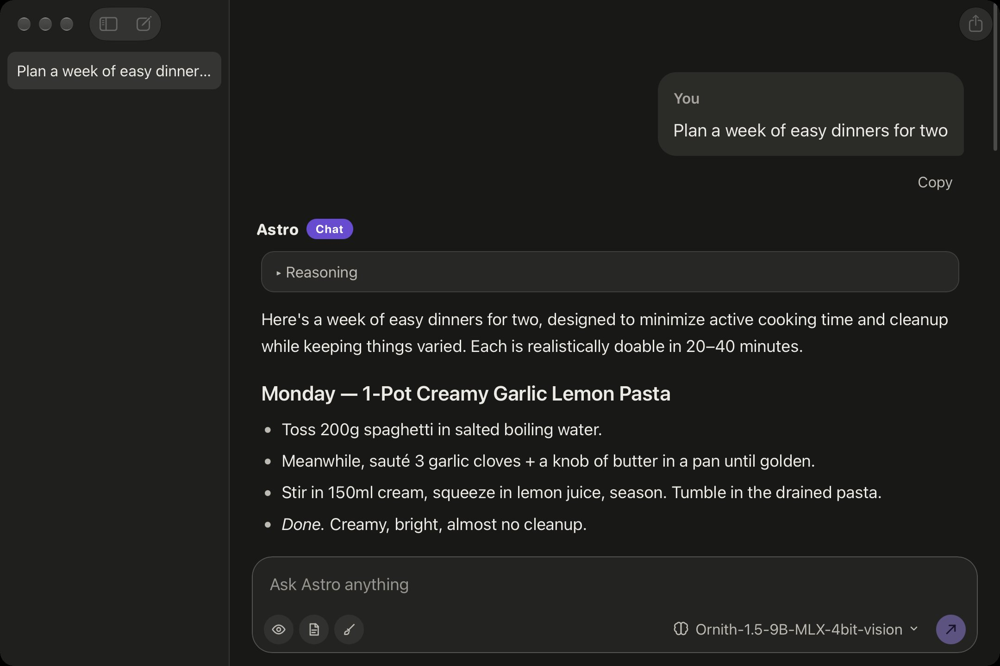
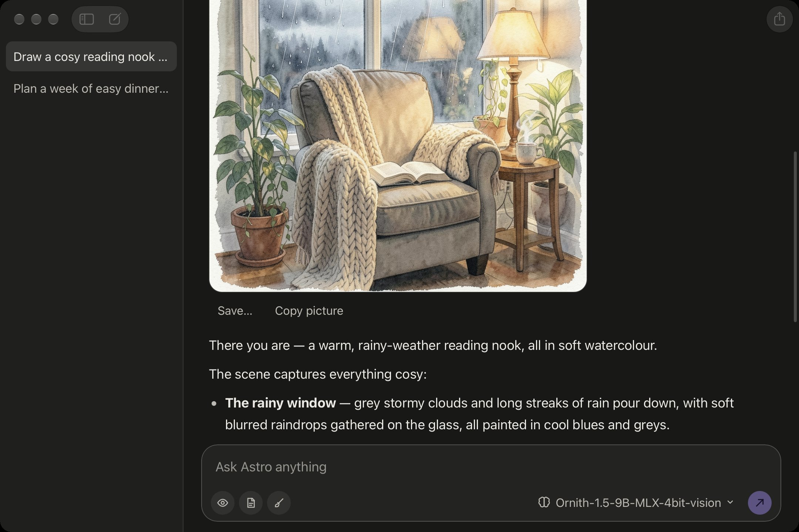
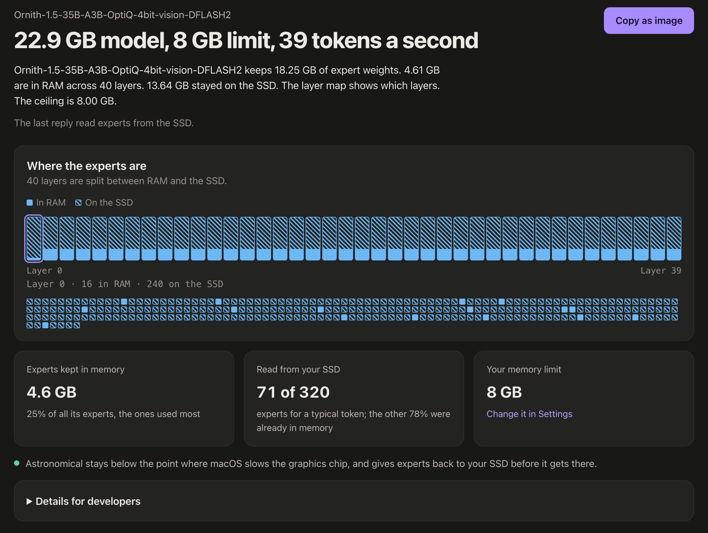
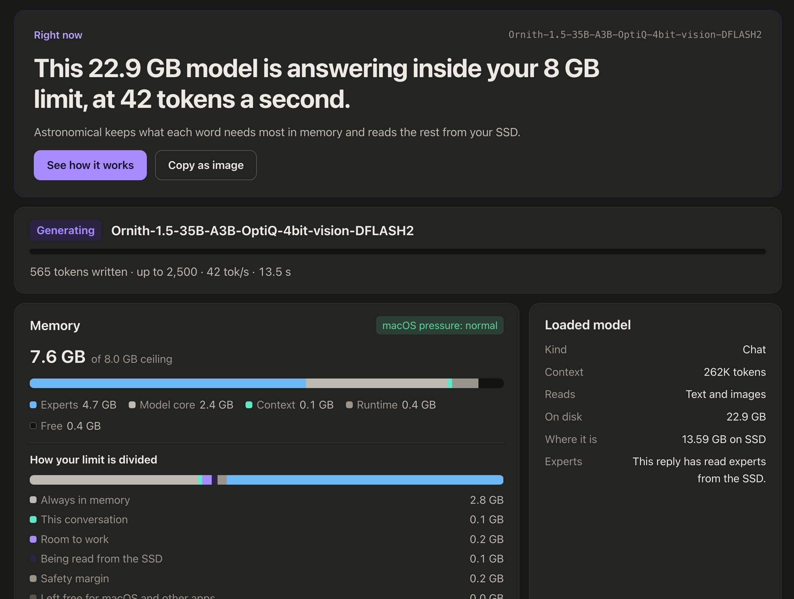
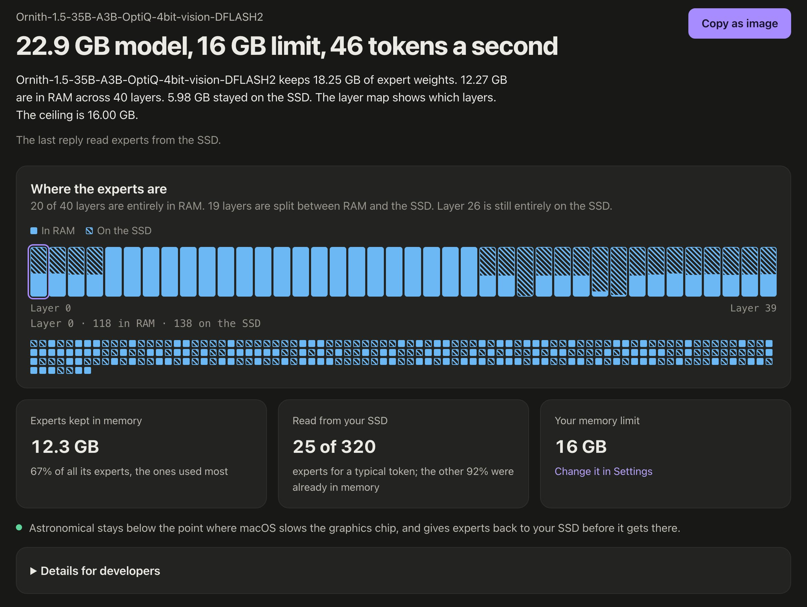

Stable on GitHub Releases · Free and open source
Private AI on your Mac. Even the big models.
Chat, make pictures and get help with code, with models that run on your Mac and nowhere else. Astronomical even runs models larger than the memory you give it.
For Macs with Apple silicon · macOS 14 or later · No account needed
Stays on your Mac
What you type, what it answers and the models themselves never leave this Mac. There is no account to make.
Free, and open to read
No subscription and no trial. Every line of the app is public on GitHub, and it is signed and checked by Apple.
Models bigger than your memory
Give it the 8 GB a 16 GB Mac can spare and it still runs a 22.9 GB model, reading the rest from your SSD.
Chat
Ask anything.
Plan a project, learn something new or get a draft started. Attach a photo or a document and it reads that too, right here on your Mac.
Works offline once a model is downloaded.

Pictures and voice
Describe it. It draws it.
Ask for a poster, a card or an idea sketch, then save it or copy it straight into anything. Astronomical can also read any reply aloud.

How it works
Bigger than your memory.
A big model is made of many specialists, called experts, and only a few are needed for each word. Astronomical keeps the busy ones in memory and reads the rest from your SSD the moment they are needed, so the rest of your Mac stays usable.
Memory8 GB, the limit you set
Just brought in for this word
Your SSDthe whole model, 22.9 GB
Being read right now
Not a drawing: one real reply with 8 GB to spare, what a 16 GB Mac can give
- 22.9 GB
- the model on disk
- 8 GB
- the memory it was allowed
- 39
- tokens a second while writing
- 78%
- of the experts each token needed were already in memory



The same model, the same reply, two everyday amounts of memory
A 16 GB Mac, giving it 8 GB
- 39
- tokens a second
- 78%
- already in memory
- 4.6 GB
- of experts kept
A 32 GB Mac, giving it 16 GB
- 46
- tokens a second
- 92%
- already in memory
- 12.3 GB
- of experts kept
Captured 28 November 2026 with a development build of Astronomical after version 0.2.138 and Ornith 1.5 35B-A3B at 4 bits, one 2,500-token reply to a Shakespeare prompt, on an Apple M5 Pro Mac with its memory limit set to 8 GB and then to 16 GB. A Mac with 16 or 32 GB in total usually has a slower graphics chip and SSD than this one, so expect fewer tokens a second. Observatory comes with the app: open it from the menu bar and watch your own.
Read the field notes →For developers
Your coding agent, on a local model.
One command starts Claude Code, Codex or OpenCode already pointed at your Mac. Any tool that speaks the OpenAI or Anthropic API can use it too, even with a model bigger than your memory.
Set up your tools →$ astronomical launch claude
$ astronomical launch codex
$ astronomical launch opencode
# any other tool
base URL http://127.0.0.1:6732/Up and running in a few minutes.
No terminal and no settings to learn first.
Download and drag
Open the disk image and drag Astronomical into Applications.
Take the suggested model
It suggests one that suits your Mac. One click downloads and checks it. See the models →
Start chatting
Type your first message. Everything happens on your Mac.
A small download · updates itself
- Is it really free?
- Yes. It is open source and has no paid tier. Each model has its own licence, shown before you download it.
- Will it run on my 16 GB Mac?
- Yes. Give it 8 GB and it stays inside that, leaving the rest for your other apps, even with a model far bigger than 8 GB.
- Does anything leave my Mac?
- Only what you agree to: a problem report you choose to send, or a once-a-day count you can switch on. You see each one in full first. Read the privacy page →
Field notes
Claims need receipts.
Each field note says what was measured, how, and what is still open. Ideas that did not work stay on the record.